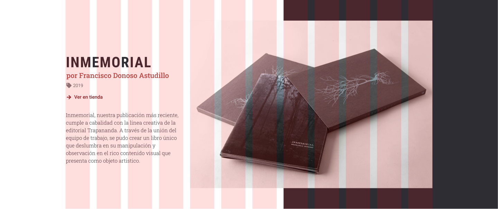
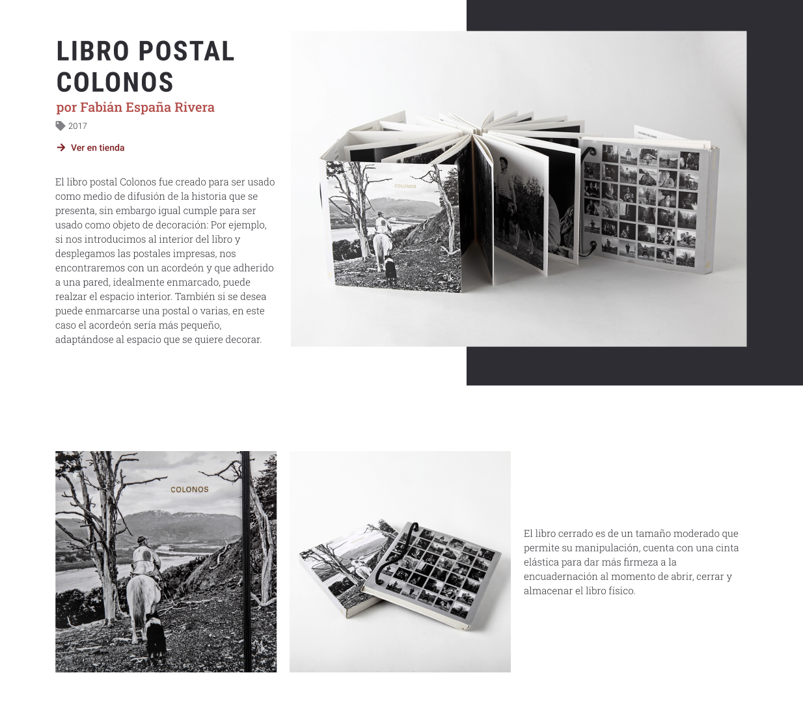
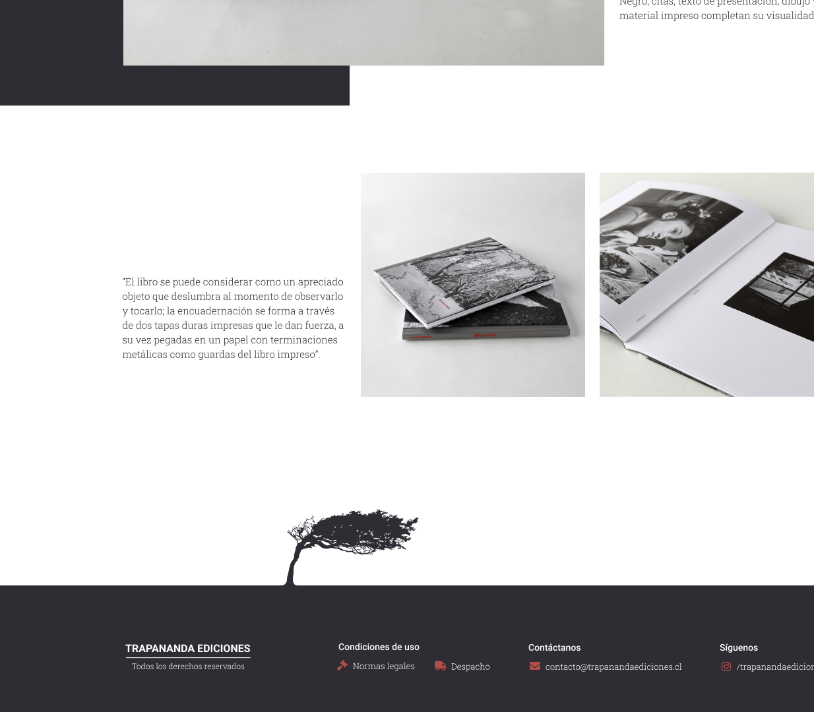

Trapananda
Diseño de interfaz · Dirección de arte · Handoff · 2021Contexto
Una editorial patagónica necesitaba que su sitio se sintiera tan territorial como su catálogo
Trapananda Ediciones es una editorial independiente de la Región de Aysén, con arraigo en Cochrane y Coyhaique, especializada en fotolibros de autor que rescatan la memoria, el paisaje y la identidad cultural de la Patagonia chilena. Startup Motion me contactó para diseñar un sitio que representara ese oficio editorial y ese enfoque territorial tan marcado.

El Reto
...
El cliente era un fotógrafo con una mirada muy exigente sobre cómo debía verse su trabajo online. En lugar de resolverlo solo desde el brief escrito, mi equipo me invitó a una videollamada directa con él: mi interés personal por la fotografía y por el sur de Chile me permitió conectar rápido con su visión, y validar en esa misma conversación la dirección visual de la propuesta.

Diagramación asimétrica
...


| Nombre | Font | Weight | Size | Line height |
|---|---|---|---|---|
| Titular 1 | Roboto condensed | Bold | 54px | 60px |
| Titular 2 | Roboto condensed | Bold | 42px | 48px |
| Titular 3 | Roboto Slab | Bold | 24px | 30px |
| Párrafo destacado | Montserrat | Regular | 20px | 26px |
| Párrafo | Montserrat | Regular | 16px | 22px |
| Texto pequeño | Montserrat | Regular | 14px | 20px |
DECISIONES DE DISEÑO
Un sistema visual pensado para el desarrollador, no solo para el cliente
Como en el resto de los proyectos vía Startup Motion, entregué wireframes, mockups y una guía de estilos con códigos de color, tipografía, espaciados y estados de componentes exactos, para que el desarrollador construyera sin ambigüedad. Prototipado en Figma, implementado en WordPress con Divi.
RESULTADOS
No tengo el comentario del cliente por escrito, pero la conversación directa con él durante el proceso —poco común en encargos vía agencia— fue la validación más honesta que pude pedir.
APRENDIZAJES
Conectar con el oficio del cliente cambia la calidad de las decisiones
Cuando compartes, aunque sea un poco, el mundo del cliente —en este caso la fotografía y el paisaje patagónico— las decisiones de diseño dejan de ser una interpretación del brief y empiezan a ser una traducción real de lo que esa persona quiere decir.